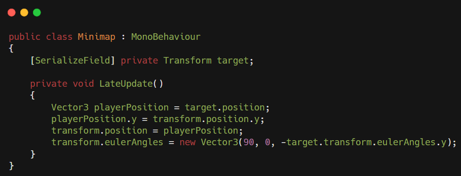
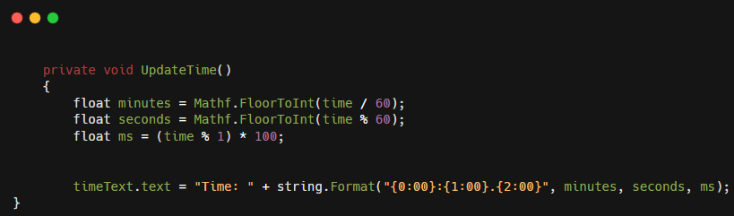

Night Racer
A racing game that takes place in the night.
A night racer is a racing game that takes place in the night
Code parts
This piece of code handles everything everything for the UI
When the player reaches a checkpoint it disables the checkpoint marker.
When the player reaches the finish line it does several things including:
- Taking note of how long the current lap has taken
- Stores the lap with the laptime, if this is the fastest lap it will display the time
- If it is not the last lap reset the checkpoints so they are visable again
- If it is the last lap it will stop the game and show you all laps with laptimes
Using the code and an image and Mask in Unity I created a minimap where the player and checkpoints are visable.
This code handles the calculation of the time used to display laptimes. It takes the time variable which updates in seconds and converts it into minutes, seconds and milliseconds. Then using the string.format it displays the time.
